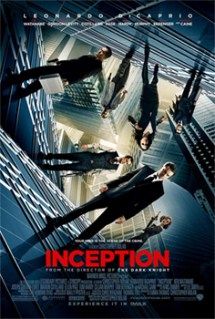

|

|
A Origem é um filme americano de ficção científica lançado em 2010.
Escrito, dirigindo e produzindo pelo britânico Christoper Nolan, o longa estrela Leonardo DiCaprio, Ken Watanabe,
Joseph Gordon-Levitt, Marion Cotilard, Ellen Page, Tom Hardy, Cillian Murpy, deleep Rao, Tom Bereger e Micael Caine.
DiCapri faz o papel de Dom Coob, um ladrão especializado
em extrair informações do inconsciente dos seus alvos durante o sonho.
Incapaz de visitar seus filhos, Cobb tem a chance de vê-lo em troca de um último trabalho: fazer a inserção,
plantar a origem de uma ideia na mente de um rival de seu cliente.
- Leonardo DiCapri
- Ellen Page
- Marion Cotillard
- Joseph Gordon-Levitt
- Ken Watanabe
|